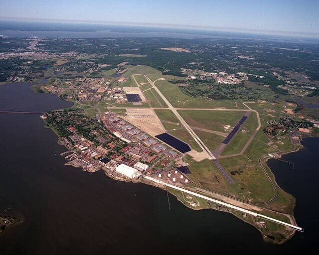

Joint Base Langley-Eustis
Virginia

In December 2023, unidentified drones repeatedly flew into the base's airspace for weeks, and their source was never identified publicly. 1
Open in the interactive Watcher
Related
Sources
- Mysterious Drones Swarmed Langley AFB For Weeks (Joseph Trevithick and Tyler Rogoway) The War Zone, Mar. 15, 2024